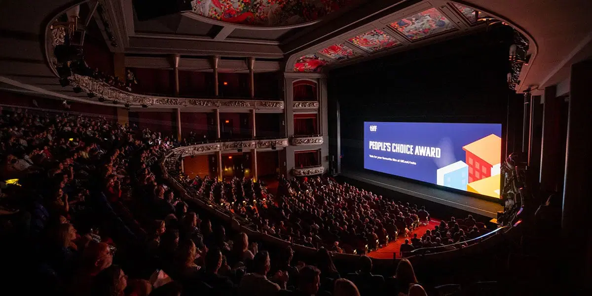
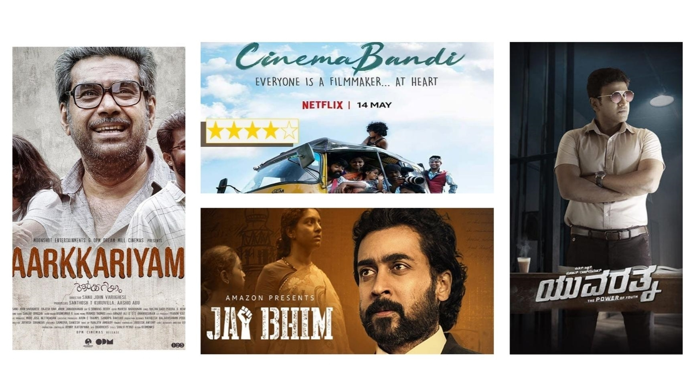
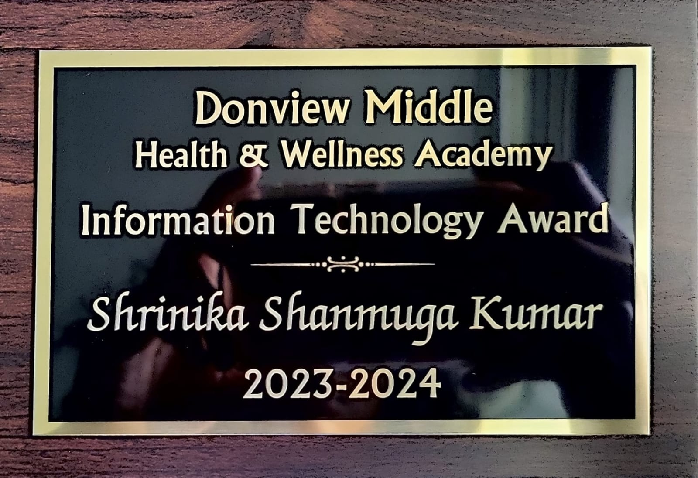
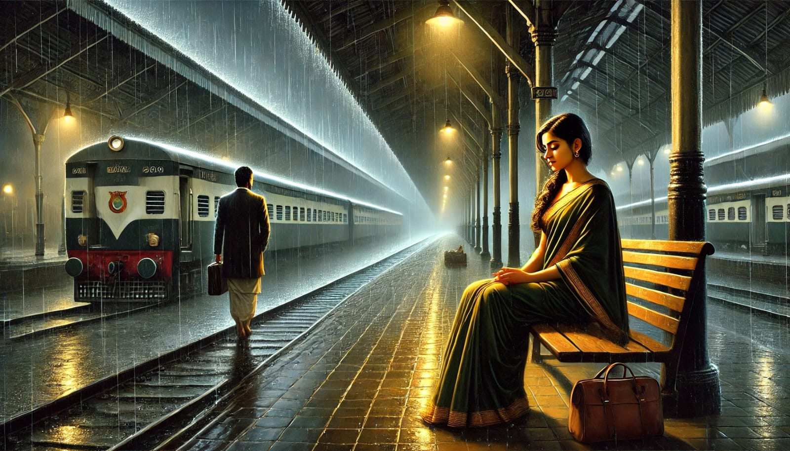

MY INTERESTS!
Film Making
Story Writing
FILM MAKING ❤︎
Filmmaking isn't just a casual hobby for me; it's my biggest dream, a passion that genuinely gives me goosebumps. My ultimate goal is to become a renowned Film Director, known for crafting the most gritty, unique, and utterly imaginative screenplays, dialogues, and overall direction. I am, without a doubt, a devoted movie buff, a true fanatic of the cinematic arts. The exact moment this intense craze with movies began is a bit of a mystery. Was it the immersive soundscapes? The collective yells of excitement in a theater? The captivating cinematic colors that painted stories on the screen? Or perhaps it was the sheer talent I witnessed from the actors and creators? It's a unique interest that blossomed quite independently within me.

Click the picture above for "how to become a film director"
Interestingly, the more traditional side of my mother's family wasn't particularly enthusiastic about movies. With my Dhadhu being a professor and my Amama a gold-medalist graduate, their focus was primarily on academic excellence for their children. Films weren't given much importance, although my grandfather did occasionally enjoy Bollywood and Hollywood productions. Consequently, my mother and aunt were primarily focused on their studies and academic achievements, making trips to the movie theaters a very rare occurrence.
Similarly, movies weren't a central passion in my father's family. However, they did allow him to watch films, and he had more opportunities to visit theaters during his youth and college years with his friends. My father developed an appreciation for Kollywood, the Tamil film industry, and watched movies frequently, though he wouldn't describe himself as obsessed. Yet, he somehow passed this interest, perhaps even amplified it, onto me. My own journey into the world of cinema began at a young age, around five or six! Even then, I could grasp and remember the core concepts of the movies I watched. While others came seeking pure entertainment, I was drawn to the artistry – the intricate way stories intertwined with characters and explored profound themes, and the pure talent on display.
My mother was still getting accustomed to the cinematic experience, while I had already developed preferences for certain actors, genres, and directors who deeply inspired me. The other kids my age often found my interests a bit peculiar. While they struggled to sit still for a two-hour movie, I would be completely engrossed, connecting with the characters as if time ceased to exist. While they actively participated in sports like cricket, football, and basketball, and the girls played with Barbies and dolls, I found immense satisfaction in staying home and watching a movie on screen. They might have considered me strange, but I, in turn, found their lack of interest in the magic of cinema somewhat unusual. After all, who wouldn't want to escape into a good movie?!
By the age of nine, I felt like I had explored much of Tamil cinema, having watched what seemed like almost everything! This led me to venture into other film industries, discovering the diverse storytelling of Mollywood, Tollywood, Sandalwood, Bollywood, and Hollywood. I quickly realized that to truly appreciate these films, understanding the language was key. Subtitles felt like a distracting barrier. This realization sparked a significant undertaking: I began learning all these languages. This explains my current fluency in understanding and speaking Kannada, Telugu, Malayalam, Hindi, and more. These films became more than just entertainment; they became a gateway to understanding different cultures and connecting with people on a deeper level. Knowing their languages allowed me to feel like one of their own, opening doors to their traditions, histories, and perspectives.

As I contemplated my future and potential career paths, I started to see beyond the actors, the vibrant visuals, the captivating music, and the thrilling action. I recognized the powerful language of cinema and the visionary behind it all – the Director. While actors brought characters to life, it was the Director who shaped the entire world of the film. This realization resonated deeply within me. The idea of being a director, of exploring the boundless realm of creativity, of having the power to create my own worlds, stories, and characters, and then sharing that art with an audience, evoking a spectrum of emotions – laughter, sorrow, fear, it all completely captivated me.
I grew older, and around thirteen, I began to seek practical experience behind the scenes. I learned the fundamentals of setting up cameras, arranging lighting, and coordinating the work of the crew. I owe this early exposure to my Grade 7 teacher, a tech-savvy individual who shared my passion for the technical aspects of filmmaking. Working alongside him, I quickly learned the ropes, experiencing the energy of being backstage, operating the control board, managing the lights, and witnessing the tangible appreciation for my contributions. I learned to guide a crew and became familiar with various technologies, though my focus remained on absorbing knowledge and dedicating myself to the craft rather than immediately seeking the director's chair.
When my parents became aware of my ambition, my dad chuckled, perhaps finding it a youthful fantasy, while my mother expressed concern, likely envisioning a more conventional and stable career path for me, such as computer engineering, medicine, or a government position. They voiced their worries about the immense challenges and the low success rate in the film industry. However, I held onto the belief that talent, coupled with unwavering dedication, would be enough to pave my way. I was determined to succeed. Witnessing directors on stage, resplendent in their formal attire, accepting prestigious awards like Oscars, ignited a powerful desire within me to one day stand in their place. I yearned for recognition for my talent, even if initial opportunities were unpaid. For me, the intrinsic reward of appreciation and the chance to become a role model far outweighed the pursuit of mere financial gain. I firmly believed in pursuing a career I loved, even if it meant a humbler income, rather than being trapped in a well-paying but unfulfilling job for the rest of my life.
A significant moment occurred on my middle school graduation night when my Grade 7 teacher nominated me for the IT award. I felt immense pride, having spent two formative years under his guidance, creating unforgettable memories backstage. When he called my name to receive the award, I blushed with happiness, the feeling of holding the trophy, the sound of the students' applause – it resonated deeply within me. That feeling of recognition solidified my resolve: I would make a movie in my lifetime!

STORY WRITING ❤︎
Ah, story writing, another significant chapter in the unfolding book of my interests. Whenever I witness those raw and unique screenplays come to life on the screen, I've always harbored a dream of crafting my own narratives, saving them for a future where I can showcase what stories a young girl's imagination can conjure, something far beyond the realm of simple cartoons and fairy tales.
From a young age, I observed how directors and screenplay writers meticulously translated their thoughts and ideas into compelling stories or scripts before bringing them to the screen. It then dawned on me that the ability to weave tales in one's familiar language is a true gift, one that I seemed to possess. While some might have expected me to write about magic and sparkles, my imagination ventured into far more complex territories. I found myself drawn to mature concepts, giving voice to real-life problems and shedding light on the often-unseen underbelly of our society, exploring themes like discrimination, women's harassment, and illicit trades. Initially, people around me were unaware of the depth and nature of my writing until I reached Victoria Park Collegiate Institute. There, my English teacher provided us with the space and time to write a short story as an assignment.
I felt a surge of quiet satisfaction when I noticed that while many of my classmates found the task tedious and uninspiring, I was genuinely excited to begin. They grumbled about even starting the first line, some rushing to finish at the last moment, others submitting the assignment late. But I completed my story on the very first day, meticulously refining my grammar, ensuring the fluency of the narrative, and tweaking scenarios here and there. The other students were taken aback, but I was simply pleased. It didn't feel like a forced task but rather an enjoyable exploration of my own creativity. It felt as though fate had granted me a dedicated window of time to focus on my storytelling, something that was often disrupted by personal or academic pressures. Of course, I always had to prioritize what was deemed most important. But this assignment was an invaluable opportunity to communicate an interest that often remained locked away. Although the constraints of a school assignment limited the full scope of my creativity, I was able to submit a complete, nine-page story to my teacher, for whom I am incredibly grateful for creating such engaging and genuinely fun opportunities.
My first ever short story that felt truly complete and mature was titled 'Platform 9,' where I delved into a world of unspoken crimes. The narrative centered around Sahana, a mute girl found at a desolate train station, and Natraj, a lawyer returning from an exhausting day in court. Through their encounter, Natraj uncovers the vulnerable situation Sahana is in, exploited by a ruthless gang. When the assignment was submitted and presented, my English teacher was genuinely flabbergasted. I was so pleased that she enjoyed the story. Receiving a good grade was gratifying, but her feedback on the narrative made me feel truly proud. It confirmed my feeling that I had a knack for writing stories and the ability to create unique and compelling worlds.

Click the picture above to read "Platform 9"
I felt that 'Platform 9' was a story that deserved wider acknowledgment. Women's rights and safety are crucial issues, and no one should endure the injustice faced by Sahana in my story. Driven by this belief, I published my story on a free online platform. To my surprise and delight, I received a wealth of amazing feedback from readers, including high-ranking officers who related to the situations I described, commenting on how they encountered similar cases in their work. They expressed both pride and shock at a fourteen-year-old girl writing such narratives. They had perhaps expected a different genre, but I had chosen to explore the bitter and often dark realities of life. I especially cherished the personal appreciations and comments I received. Even though the story didn't achieve widespread recognition, I felt an immense sense of pride and happiness with the connections it made. To this day, I continue to write many more stories, saving them for a future where they can hopefully be presented as those gritty and impactful cinematic experiences on the screen.